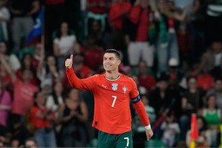

Ganador de la champions league 2007-2008
Cristiano lideró al Manchester United en la conquista de la Champions League 2007-2008. Marcó un gol en la final contra el Chelsea (1-1)
Pasión, disciplina y más de 900 goles en la historia del fútbol.
11
1
3° lugar (Al Nassr - Liga Saudí)
...
CR7 marcó doblete ⚽⚽
1 gol y 1 asistencia 🏆

5 goles

145 goles

450 goles

101 goles

104 goles

Cristiano lideró al Manchester United en la conquista de la Champions League 2007-2008. Marcó un gol en la final contra el Chelsea (1-1)
Tras una temporada brillante en la que ganó la Champions League y la Premier League, Cristiano ganó su primer Balón de Oro.

Se convirtió en el jugador más caro del mundo al llegar al Real Madrid por 94 millones de euros.
Contribuyó decisivamente a la conquista de la décima Champions League del Real Madrid.

Aunque se lesionó en la final ante Francia, fue el líder espiritual y futbolístico del equipo. Portugal ganó su primer gran título internacional, con Cristiano como capitán y máximo referente.
En el debut de Portugal en el Mundial de Rusia, Cristiano marcó tres goles ante España (3-3). Su tiro libre al minuto 88 fue uno de los momentos más icónicos de su carrera.
Lideró al Real Madrid hacia tres Champions seguidas (2016, 2017, 2018). Su chilena ante la Juventus en cuartos de final fue uno de los goles más espectaculares de la historia del torneo.

Reconocido como uno de los mejores futbolistas de la historia. 🌟

Con Portugal, ganó la primera UEFA Nations League, marcando un hat-trick ante Suiza en semifinales.

Con Portugal ganó la UEFA Nations League 2025, anotando el empate en el minuto 61 (su gol número 138 con la selección) y llevando al equipo a la victoria en los penales frente a España.

Superó al iraní Ali Daei y se convirtió en el máximo goleador de selecciones nacionales de todos los tiempos (más de 125 goles con Portugal).
